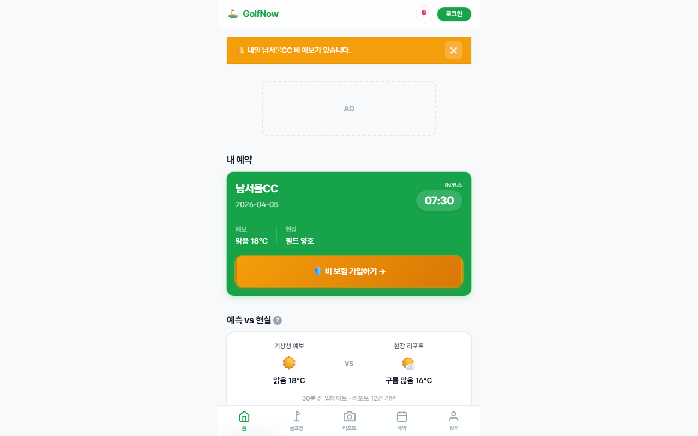
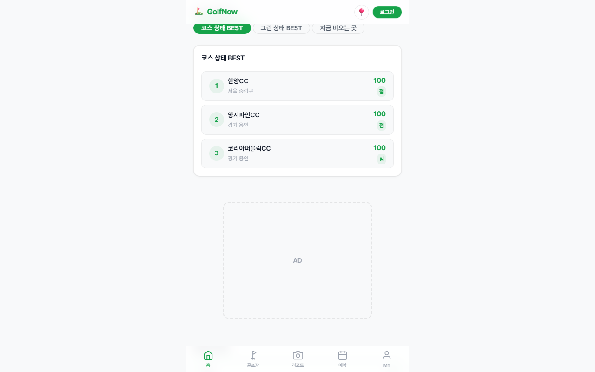

Simsa 검수 리포트 ⛔ 작동 안 해요
대상: https://golf-nngxsj9ap-seunghunbae-3svs-projects.vercel.app/
확인하려던 것: 골퍼가 앱을 열어 현재 골프장 컨디션 확인 도구임을 이해하고, 코스/라운드가 지금 플레이 가능한지 확인하는 핵심 플로우를 시작할 수 있어야 한다
판정: 작동 안 해요 — 고쳐야 해요
핵심 흐름이 지금은 작동하지 않아요. 앱이 데이터를 가져오는 서버 주소를 찾지 못했어요.
무엇을 발견했나요
무엇이 문제인가요앱이 데이터를 가져오는 서버 주소를 찾지 못했어요.
왜 그런가요앱이 연결하려는 백엔드(데이터베이스/API) 주소가 살아있지 않거나 잘못 적혀 있어요. 그래서 목록·검색 결과 같은 실제 내용이 안 떠요.
어떻게 고치나요백엔드 주소(예: 데이터베이스 URL 환경변수)가 올바른지, 그 서비스가 켜져 있는지 확인하세요. 서비스가 꺼졌거나 삭제됐다면 다시 켜거나 새 주소로 바꿔야 해요.
개발자용 기술 정보
GET https://njcheczfpeszcqrbhrlf.supabase.co/rest/v1/golf_courses?select=*&is_active=eq.true&order=name.asc (net::ERR_NAME_NOT_RESOLVED)
무엇이 문제인가요'검색창에 '서울' 입력하기' 단계가 끝까지 되지 않았어요.
왜 그런가요이유: 검색 결과/내용이 확인되지 않음 (또는 데이터 요청 실패)
어떻게 고치나요그 단계에서 무엇이 나와야 하는지 정하고, 눌렀을 때 그 결과가 실제로 뜨는지 확인하세요.
개발자용 기술 정보
검색 결과/내용이 확인되지 않음 (또는 데이터 요청 실패)
무엇이 문제인가요'검색 결과 화면 확인' 단계가 끝까지 되지 않았어요.
왜 그런가요이유: 데이터 요청 실패가 관찰됨
어떻게 고치나요그 단계에서 무엇이 나와야 하는지 정하고, 눌렀을 때 그 결과가 실제로 뜨는지 확인하세요.
개발자용 기술 정보
데이터 요청 실패가 관찰됨
화면으로 보기
첫 화면 (앱을 열었을 때)
검색창에 '서울' 입력하기 후 화면
검색 결과 화면 확인
진행 영상
다음에 해볼 것
- 가장 급한 것부터: 백엔드 주소(예: 데이터베이스 URL 환경변수)가 올바른지, 그 서비스가 켜져 있는지 확인하세요. 서비스가 꺼졌거나 삭제됐다면 다시 켜거나 새 주소로 바꿔야 해요.
- 고친 뒤 이 검수를 한 번 더 돌려서, 아래 스크린샷이 정상 화면으로 바뀌는지 눈으로 확인하세요.
안내
- 이 검수는 실제 브라우저로 앱을 열어 눈에 보이는 것을 확인한 결과예요. 모든 버그를 찾았다는 뜻은 아니에요.
- '무엇이/왜/어떻게'는 사람이 읽기 쉬운 설명이고, 정확한 기술 원인은 각 항목의 '개발자용' 정보에 있어요.
- 화면 스크린샷을 함께 보면 어디서 막혔는지 눈으로 바로 알 수 있어요.